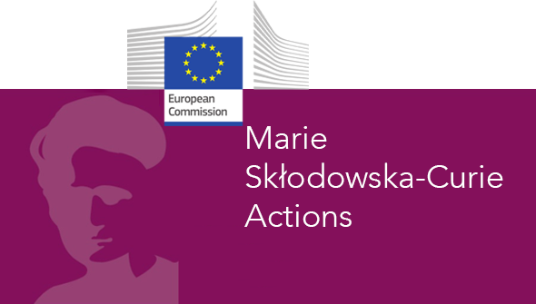

FCS_BACSUB: Fluorescence correlation spectroscopy in Bacillus subtilis
This page is a summary of my fellowship project, carried out between September 2021 and September 2023. It is intended for a general audience.
Context
Bacteria are fascinating organisms. They are one of the simplest forms of life on earth, yet they can perform multiple tasks (consuming nutrients, moving, dividing…). Fundamental research about bacteria has in the past proved very useful as it allowed the discovery of techniques like PCR or gene editing with CRISPR/Cas9, which readily have life-saving real-life applications. A second reason to study bacteria is to fight antibiotic resistance. Some bacteria are pathogenic: they cause potentially deadly diseases, to both humans and animals. Many of these diseases can easily be treated (cholera, plague, tuberculosis) thanks to fabulous molecules called antibiotics. Unfortunately, some bacteria have developed a resistance to antibiotics and are now much harder to treat. To develop new strategies to kill such bacteria, we need to further our understanding of how exactly these organisms work. With a perfect understanding of how a bacterium works, we can develop strategies to kill them without damaging the human it infected.
In this work, we were interested in understanding the physics of the plasma membrane (the envelope that separates the bacterium from its environment). The plasma membrane is a key component of the cell and is the target of many classes of antibiotics. The plasma membrane of every cell, including of bacteria, is a fluid: it is made of molecules moving and important molecules inside the membrane (proteins) can move to perform their role. The viscosity of the membrane is the parameter that governs how fast a given molecule can move within this membrane. It is a parameter of crucial importance, as we know that bacteria change their membrane composition to maintain a certain level of viscosity in response to changes from their environment (typically temperature). The main goal of this project was to develop an instrument capable of measuring this viscosity. Before, scientists could only guess changes in fluidity from changes in composition. Here, we wanted our technique to give us an exact value for the viscosity of the membrane. The second goal of this project was to use this technique to study how the membrane of the bacterium Bacillus subtilis reacts to a change in temperature. This was studied a lot before, and we wanted to compare the results we obtained with our new, more precise technique, with the results obtained previously.
Work performed
To measure the viscosity of a biological membrane, we introduce a fluorescent molecule in this membrane, and see how fast it moves. For this project, we used a fluorescent marker called Nile Red, well known to specialists. Because it moves randomly in any direction instead of going from a point A to a point B, we call its motion diffusion. The faster Nile Red diffuses, the lower the viscosity.
To measure the diffusion speed of a membrane marker, we used a technique called fluorescence correlation spectroscopy. This technique consists in observing a cell (bacillus subtilis here) with fluorescent molecules (Nile Red in its membrane) under a microscope. When fluorescent molecules diffuse, they induce intensity fluctuations. These fluctuations contain information about the diffusion speed of the fluorescent molecule: to simplify, we can say that faster diffusion cause faster intensity fluctuations. Concretely, to achieve this, we had to:
- Find the correct membrane marker.
- Calibrate the instrument: how much excitation laser power (excitation laser is used to activate the fluorescence of the membrane marker), how much membrane marker to add, how long to do the acquisition? This was a delicate tradeoff between quality of signal and maintaining the cell integrity. For instance, increasing the excitation laser power increases the quality of the signal but also risks damaging the cell. This was done by a long trial and error process, in which we compared experimental results done multiple times in different conditions, and in which we checked whether cells were still intact after imaging
- Develop the analysis software. We monitor intensity fluctuations, so there is a lot of processing to do to measure a diffusion speed.
- Verify how much the small size of bacteria changes the result. Indeed, the size of bacteria is close to the resolution limit of even the best microscopes, and we wanted to make sure that our results were not blurred by this. For this, we used computer simulations and artificial membranes which we created with known sizes.
To verify that our system was working well, we used it to study a partially-known system: the response in temperature of the membrane of the bacterium Bacillus subtilis. We submitted this bacterium to a cold shock (a sudden drop in temperature, from 37°C to 20°C) and measured its membrane viscosity. Previous research showed that the viscosity was expected to first drop due to the cold, then progressively increase as the bacteria “fights back” and adapts to recover its fluidity. We observed exactly that, which convinced us that our technique was working well.
Main results
We developed a method that can quantitatively compare the fluidity of bacterial membranes. This is a huge step forward with respect to what was done before and will give us much more details about how the bacterial plasma membrane work, and how important its viscosity is (this is still unclear !). We already used it to show that unlike it was previously thought, the viscosity of the plasma membrane of Bacillus subtilis is not constant at all temperatures: it compensates for a decreased temperature, but not completely. This technique will help us understand microbes better, which in the end can improve processes like fermentation that rely on microbes. Perhaps more importantly, this new tool to study the bacterial plasma membrane will likely help in understanding antibiotics and antibiotic resistance, which would be a substantial gain for human health.
Funding
This project has received funding from the European Research Council (ERC) under the Horizon 2020 research and innovation program (grant agreement No 772178 to R.C.-L.) and under the Marie Sklodowska-Curie grant agreement No 101030628.
 |
 |